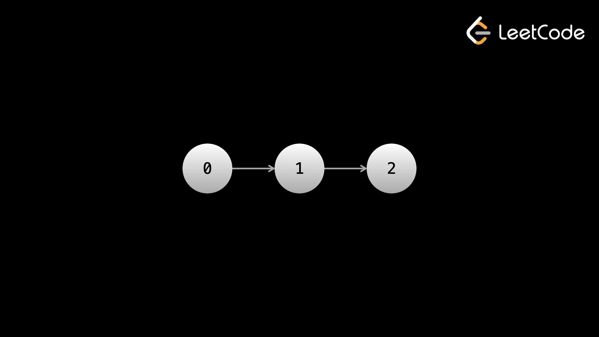

Прежде чем приступить к этой главе, вам необходимо иметь базовое представление о концепциях объектно-ориентированного программирования, включая классы, объекты и атрибуты.
Начнем с представления понятия узла. Узел можно рассматривать как элемент, но содержащий больше информации, чем просто один фрагмент данных, например целое число или строку. Узлы — это абстрактная идея. Допустим, у вас есть массив [1, 2, 3]. Вы можете представить каждый элемент как узел с двумя частями информации: целым числом и индексом. Таким образом, второй элемент будет чем-то вроде
data: 2
index: 1
Массивы реализованы «под капотом» таким образом, что элементы хранятся в памяти последовательно. Допустим, вы объявили массив для хранения 32-битных целых чисел. Каждый элемент массива имеет адрес, который находится на расстоянии 4 байтов (32 бита) от своих соседей. Это позволяет программисту получать доступ к элементам массива с помощью индексации (например, arr[6] и т. д.).
Связанный список — это структура данных, похожая на массив. Он также хранит данные в упорядоченном виде, но реализуется с использованием объектов узла (у вас будет собственный класс, определяющий объект узла). Каждый узел будет иметь указатель «следующий», который указывает на узел, представляющий следующий элемент в последовательности.

Вот пример кода для создания связанного списка для представления данных 1 --> 2 --> 3. Как видите, класс, определяющий узел, имеет поле val, в котором будут храниться данные, и указатель next, который ссылается на следующий узел. В коде мы создаем три узла, по одному для каждого числа, а затем соответствующим образом устанавливаем указатели next.
def __init__(self, val):
self.val = val
self.next = None
Мы называем узел с цифрой 1 head, потому что это начало связанного списка. Обычно вам нужно сохранять ссылку на head. Это связано с тем, что head — единственный узел, откуда вы можете получить доступ ко всем элементам связанного списка (вы могли заметить, что мы не можем вернуться назад), поэтому, сохраняя ссылку на него, вы гарантируете, что никогда не «потеряете» любые элементы.
Честно говоря, преимущества и недостатки не очень важны с точки зрения алгоритмических задач. Это связано с тем, что почти все проблемы, связанные со связанными списками, будут содержать связанный список как часть входных данных, поэтому нет решения о том, следует ли вам его использовать, вы вынуждены это сделать. Однако есть несколько проблем, в которых связанный список используется как часть оптимального алгоритма, и на собеседовании вам могут задать пустяки, поэтому все равно полезно знать преимущества и недостатки.
Основным преимуществом связанного списка является то, что вы можете добавлять и удалять элементы в любой позиции. О(1). Предостережение заключается в том, что вам необходимо иметь ссылку на узел в позиции, в которой вы хотите выполнить добавление/удаление, иначе операция будет O(n), потому что вам нужно будет выполнять итерацию, начиная с head, пока не дойдете до нужной позиции. Однако это все равно намного лучше, чем обычный (динамический) массив, для которого требуется O(n) для добавления и удаления из произвольной позиции.
Основным недостатком связанного списка является отсутствие произвольного доступа. Если у вас большой связанный список и вы хотите получить доступ к 150 000-му элементу, то обычно нет лучшего способа, чем начать с головы и выполнить итерацию 150 000 раз. Итак, хотя массив выполняет индексацию в O(1), связанный список может потребовать O(n) для доступа к элементу в заданной позиции.
Еще несколько замечаний, которые менее важны для проблем алгоритмов, но могут возникнуть в ходе обсуждения на собеседовании: преимущество связанных списков состоит в том, что они не имеют фиксированных размеров. Хотя размеры динамических массивов можно изменять, под капотом им по-прежнему выделяется фиксированный размер — просто при превышении этого размера происходит изменение размера массива, а это дорого. Связанные списки от этого не страдают. Однако связанные списки требуют больше накладных расходов, чем массивы: каждому элементу необходимо дополнительное хранилище для указателей. Если вы храните только небольшие элементы, такие как логические значения или символы, то необходимое пространство может потребоваться более чем вдвое.
Понимание того, как манипулировать узлами и указателями связанного списка с помощью кода, важно не только для решения вопросов на собеседовании по связанному списку, но и основная концепция обработки указателей имеет фундаментальное значение для любого инженера-программиста.
Когда вы назначаете указатель существующему узлу связанного списка, указатель ссылается на объект в памяти. Допустим, у вас есть head узла:
В таком языке, как C++, есть явные указатели, обозначаемые звездочкой *. В языках без явных указателей все не примитивные переменные (например, объекты пользовательских классов) рассматриваются как указатели.
После этих строк кода ptr по-прежнему ссылается на исходный head узел, хотя переменная head изменилась. Это первая важная концепция: переменные остаются в узлах, пока они не будут изменены напрямую (ptr = something — единственный способ изменить ptr).
Если у вас есть несколько .next, например head.next.next, все, что находится до последнего .next, относится к одному узлу. Например, для связанного списка 1 -> 2 -> 3, если у вас есть head, указывающий на первый узел, и вы выполняете head.next.next, вы на самом деле ссылаетесь на 2.next, потому что head.next — это 2. Скоро мы увидим, что это очень полезный метод.
Перемещение вперед по связанному списку можно выполнить с помощью простого цикла. Это обычный код, который вы будете использовать для этого: в качестве примера давайте получим сумму всех значений из целочисленного связанного списка:
ans = 0
while head:
ans += head.val
head = head.next
return ans
Указатель конечного узла next имеет значение null. Следовательно, после выполнения head = head.next на последнем узле head становится null, и цикл while завершается.
Переход к head.next эквивалентен переходу к следующему элементу массива. Обход также можно выполнить рекурсивно:
if not head:
return 0
return head.val + get_sum(head.next)
Это наиболее распространенный тип связанного списка, который приведен в приведенном выше коде. В односвязном списке каждый узел имеет только указатель на следующий узел. Это означает, что при итерации вы можете двигаться по списку только вперед. Указатель, используемый для ссылки на следующий узел, обычно называется next.
Допустим, вы хотите добавить элемент в связанный список, чтобы он стал элементом в позиции i. Для этого вам нужно иметь указатель на элемент, находящийся в данный момент в позиции i - 1. Следующий элемент (в настоящее время в позиции i), назовем его x, будет перенесен на элемент в позиции i + 1 после вставки. Это означает, что x должен стать следующим узлом после добавляемого, а добавляемый узел должен стать next узлом после того, который в настоящее время находится в i - 1. Вот некоторый код и изображения, демонстрирующие:
def __init__(self, val):
self.val = val
self.next = None
node_to_add.next = prev_node.next
prev_node.next = node_to_add
Примечание: необычно то, что у вас будет указатель на узел в позиции, предшествующей тому, где вы хотите выполнить операцию, но мы пишем эти функции в качестве демонстрации. Обычно вы будете выполнять эти операции на лету, проходя по списку. Если у вас вообще нет указателя на нужную позицию, вам нужно будет выполнять итерацию от head до тех пор, пока не окажетесь в нужной позиции, что означает, что операция будет О(n). Если у вас уже есть указатель, это О(1).
Допустим, вы хотите удалить элемент в позиции i. Опять же, вам нужен указатель на элемент, который в данный момент находится в позиции i - 1. Элемент в позиции i + 1, назовем его x, после удаления будет сдвинут и окажется в позиции i. Поэтому вам следует установить x в качестве следующего узла для элемента, который в данный момент находится в позиции i - 1. Вот некоторый код и изображения, демонстрирующие:
def __init__(self, val):
self.val = val
self.next = None
prev_node.next = prev_node.next.next
prevNode.next — удаляемый узел. prevNode.next.next — это узел после того, который
следует сохранить. Мы
изменяем next указатель prevNode, чтобы он указывал на этот узел, а не на тот,
который удаляется.
Поскольку к удаляемому узлу можно было получить доступ только из prevNode, и теперь мы
разорвали это
соединение, он больше не является частью списка.
Как упоминалось ранее, когда у вас есть ссылка на узел с номером i - 1, вставка и удаление равны О(1). Однако без этой ссылки вам необходимо получить ссылку, выполнив итерацию из головы, что для произвольной позиции равно О(n).
Двусвязный список похож на односвязный список, но каждый узел также содержит указатель на предыдущий узел. Этот указатель обычно называется prev и позволяет выполнять итерацию в обоих направлениях.
В односвязном списке нам нужна была ссылка на узел с номером i - 1, если мы хотели добавить или удалить узел с номером i. Это потому, что нам нужно было выполнить операции с prevNode. В двусвязном списке нам нужна только ссылка на узел i. Это потому, что мы можем просто сослаться на указатель prev этого узла, чтобы получить узел с номером i - 1, а затем выполнить те же операции, что и выше.
В двусвязном списке нам нужно проделать дополнительную работу, чтобы также обновить указатели prev.
def __init__(self, val):
self.val = val
self.next = None
self.prev = None
prev_node = node.prev
node_to_add.next = node
node_to_add.prev = prev_node
prev_node.next = node_to_add
node.prev = node_to_add
prev_node = node.prev
next_node = node.next
prev_node.next = next_node
next_node.prev = prev_node
Мы называем начало связанного списка «head», а конец — «tail».
Узлы Sentinel располагаются в начале и конце связанных списков и используются для выполнения операций, а код, необходимый для их выполнения, — чище. Идея состоит в том, что даже если в связанном списке нет узлов, вы все равно сохраняете указатели на head и tail. Настоящий заголовок связанного списка — head.next, а настоящий хвост — Tail.prev. Сами дозорные узлы не являются частью нашего связанного списка.
Предыдущий код, который мы рассмотрели, подвержен ошибкам. Например, если мы пытаемся удалить последний узел в списке, то nextNode будет иметь значение null, а попытка доступа к nextNode.next приведет к ошибке. При использовании сторожевых узлов нам не нужно беспокоиться об этом сценарии, поскольку next узел последнего узла указывает на сторожевой хвост.
Дозорные узлы также позволяют нам легко добавлять и удалять элементы из начала или конца связанного списка. Напомним, что добавление и удаление производится только O(1), если у нас есть ссылка на узел в позиции, над которой мы выполняем операцию. С помощью сторожевого хвостового узла мы можем выполнять операции в конце списка в О(1).
def __init__(self, val):
self.val = val
self.next = None
self.prev = None
node_to_add.next = tail
node_to_add.prev = tail.prev
tail.prev.next = node_to_add
tail.prev = node_to_add
if head.next == tail:
return
node_to_remove = tail.prev
node_to_remove.prev.next = tail
tail.prev = node_to_remove.prev
node_to_add.prev = head
node_to_add.next = head.next
head.next.prev = node_to_add
head.next = node_to_add
if head.next == tail:
return
node_to_remove = head.next
node_to_remove.next.prev = head
head.next = node_to_remove.next
Как упоминалось ранее, мы обычно хотим сохранить ссылку на head, чтобы всегда иметь доступ к любому элементу. Иногда лучше перемещаться, используя «фиктивный» указатель и держать head в голове.
ans = 0
dummy = head
while dummy:
ans += dummy.val
dummy = dummy.next
# same as before, but we still have a pointer at the head
return ans
Использование dummy указателя позволяет нам перемещаться по связанному списку, не теряя ссылку на head.
Большая часть связанных списков перемещает указатели. Важно интуитивно понимать, как правильно переназначать указатели и порядок, в котором должны происходить переназначения. Лучший способ сделать это — увидеть процесс визуально и проработать примеры. Прочтите код в приведенных выше разделах и просмотрите соответствующие анимации, пока не получите четкое представление о том, как обрабатываются добавление и удаление.
Когда дело доходит до проблем связанных списков, многие решения трудно найти из-за их элегантности. Во многих случаях вы можете просто перебрать связанный список и поместить все элементы в массив, а затем просто решить проблему, используя массив. Однако это сводит на нет суть проблемы и почти гарантирует вам провал на собеседовании. Суть этих проблем обычно заключается в том, чтобы аккуратно манипулировать указателями, используя O(1) пространство.
В следующих нескольких статьях мы рассмотрим примеры проблем со связанными списками и распространенные шаблоны.